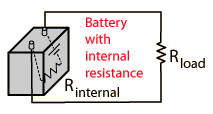

When a battery fails, it is typically because it has built up enough internal resistance that it can no longer supply a useful amount of power to an external load. If you measure the voltage of a failed battery which is disconnected, you will usually find that it has a nearly normal voltage, so that a voltmeter is not a useful tool to judge the degree of life left in a battery. If you connect the battery to an external resistance, then you will find that the terminal voltage of the battery drops; this can be interpreted as dropping most of its voltage across its internal resistance so that it is not available for external service. The following example allows you to explore the effects of internal resistance.

If the battery has an internal resistance of Rinternal = Ω
then with this load the terminal voltage of the battery will drop to
Vterminal = V .
The output current will drop to I = A and the output power will be P = watts.